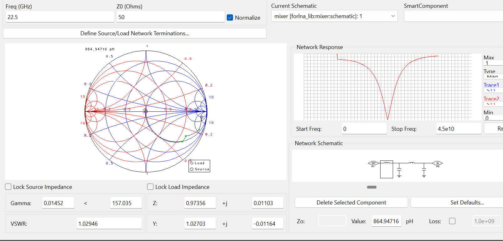
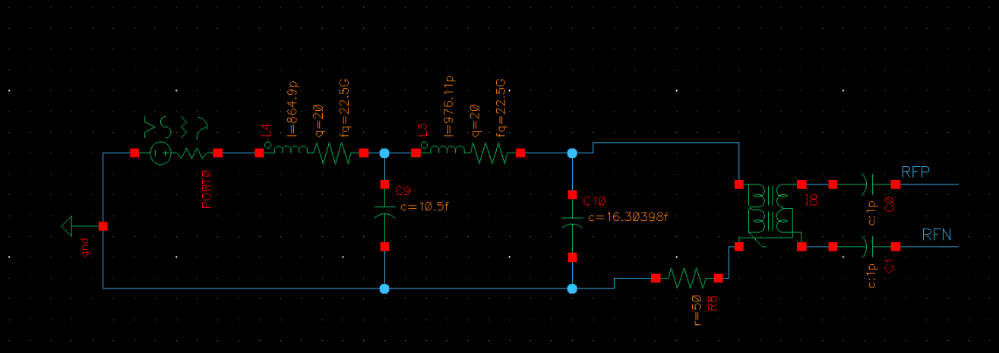
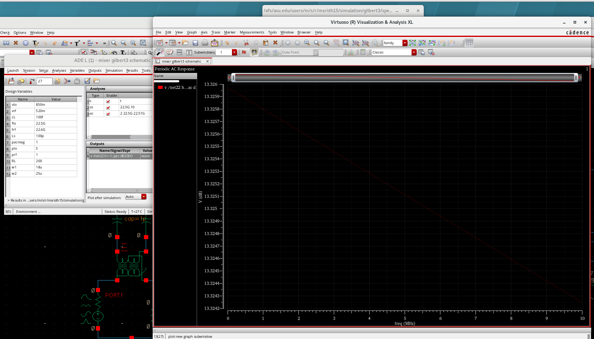
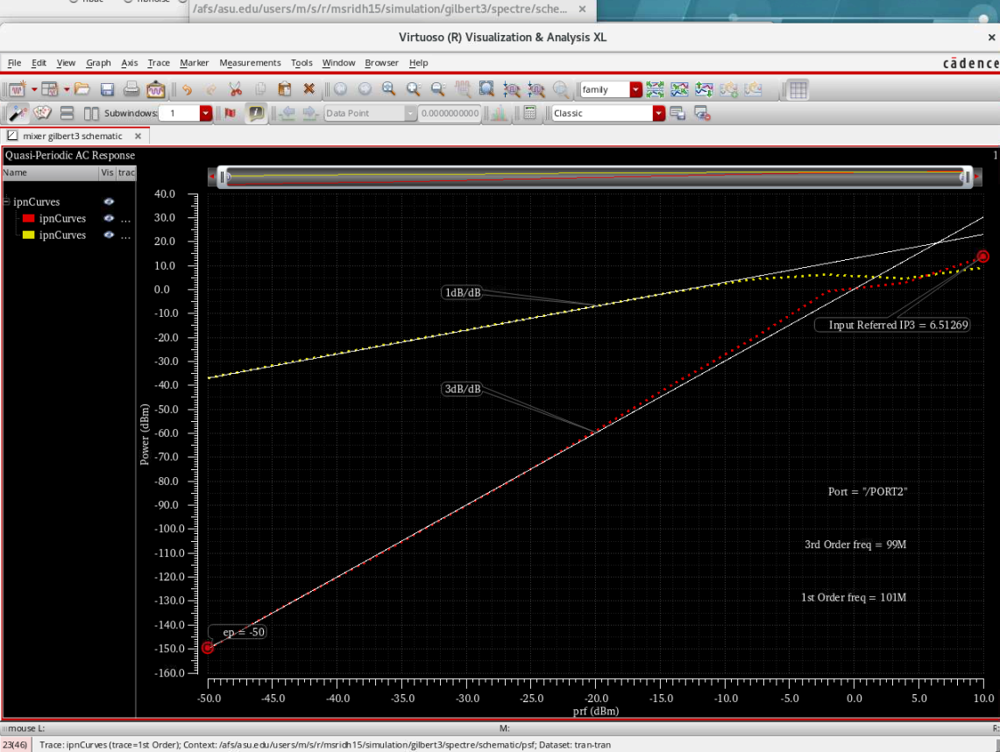
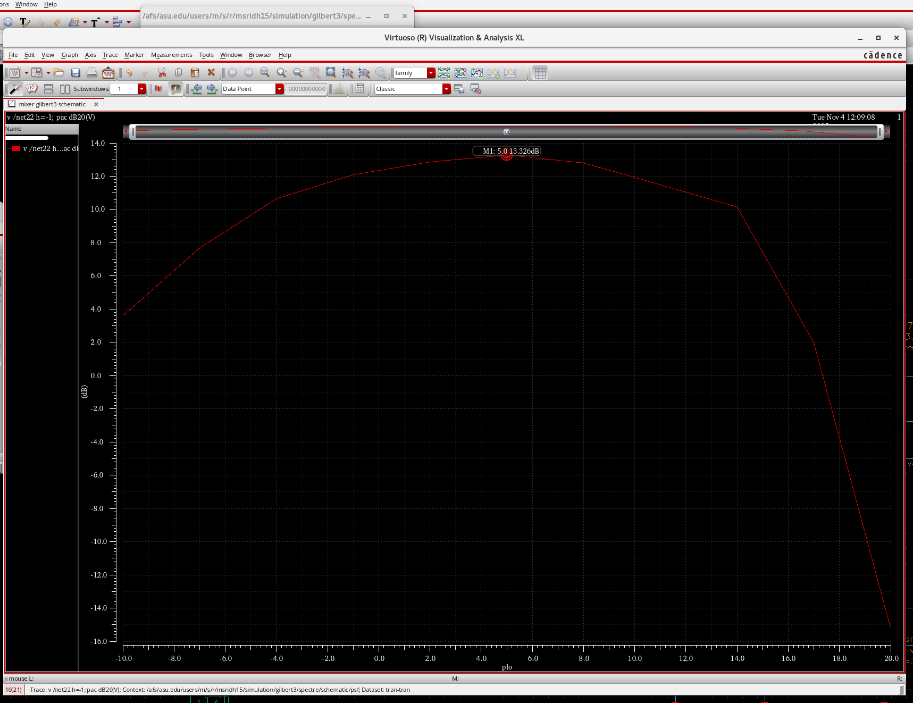
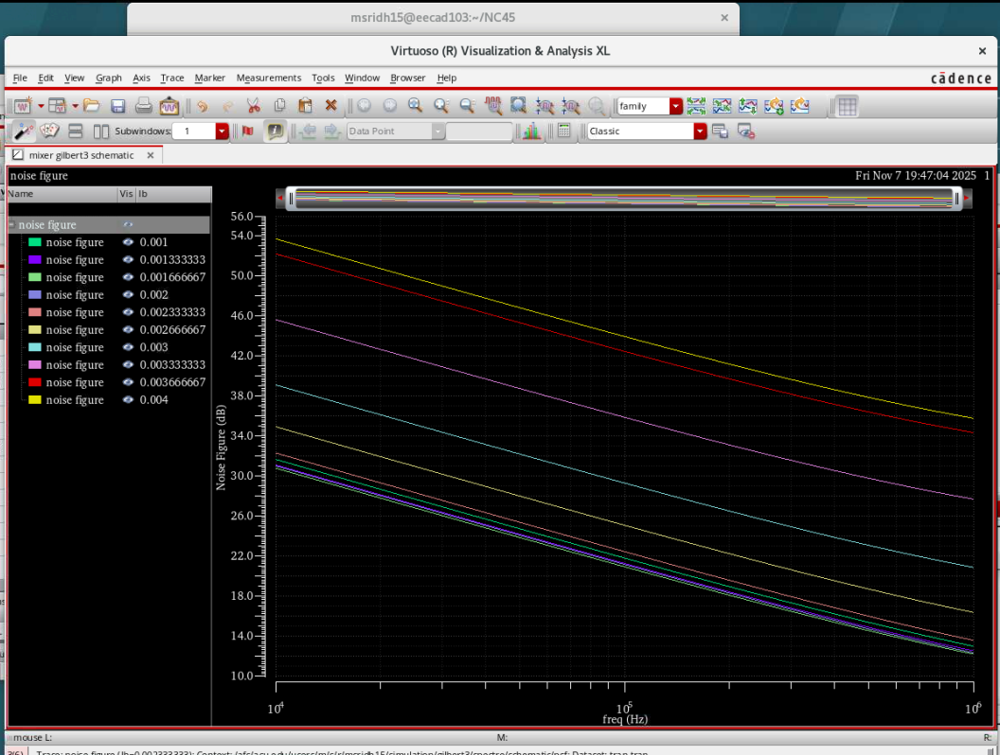

1. Design Overview & Specifications
This project presents the design of a zero-IF double-balanced Gilbert-cell down-conversion mixer
operating in the 21–24 GHz mmWave band for 5G receiver front-ends.
The mixer was optimized to achieve high conversion gain, low noise figure,
strong linearity, and good input matching while maintaining low power consumption.
Target Specifications:
RF Frequency: 21–24 GHz
Conversion Gain: > 12 dB
Noise Figure: < 14 dB
Input Match: S11 < −10 dB
IIP3: > +6 dBm
LO Power: < +4 dBm
Inductor Constraint: L < 1 nH, Q ≈ 20
2. Mixer Topology Selection

A double-balanced Gilbert-cell topology was selected due to its inherent isolation between RF, LO, and IF ports, strong suppression of even-order distortion, and excellent linearity. The topology consists of an RF transconductance stage, an LO-driven switching quad, and resistive IF loads.
3. Design Methodology & Hand Calculations
The voltage conversion gain of an active Gilbert mixer can be approximated as:
Gconv ≈ (2/π) · gm · RD
To achieve a conversion gain of approximately 12 dB (≈ 4 V/V) with a maximum load resistance of RD = 200 Ω, the required transconductance is:
gm ≈ 32 mS
An overdrive voltage of Vov = 0.2 V was selected to balance transconductance efficiency and linearity, resulting in a drain current of approximately 3.2 mA per RF transistor. This bias point provides sufficient headroom while maintaining low power consumption.
4. RF Input Matching Network

The RF input was matched to 50 Ω using a two-stage L-matching network. The mixer input impedance was extracted using PSS + PSP analysis and optimized on a Smith chart. Small inductors and capacitors were used to resonate out device parasitics near 22.5 GHz, achieving S11 < −10 dB across the full band.
5. Conversion Gain Performance
PSS + PAC simulations show an average conversion gain of ≈ 13.3 dB across the 21–24 GHz band with IF fixed at 100 MHz, indicating a flat and stable frequency response.
6. Linearity: P1dB & IIP3
Two-tone simulations confirm an IIP3 greater than +6 dBm, meeting linearity requirements for mmWave receiver front-ends. The double-balanced topology significantly suppresses distortion products.
7. LO Power Sweep Analysis
Conversion gain increases with LO power as the switching quad transitions from partial conduction to full commutation. Saturated conversion gain is achieved at approximately +3 dBm. Beyond this point, gain degrades due to charge injection, parasitic coupling, bias disturbance, and harmonic mixing.
8. Flicker Noise & Bias Current Trade-Off
Flicker noise analysis shows the expected 1/f behavior at low IF frequencies. Increasing bias current improves transconductance and reduces noise, with diminishing returns beyond ≈ 3 mA. This highlights the fundamental trade-off between noise performance and power consumption in active mixers.
9. Final Performance Summary
The designed Gilbert-cell mixer achieves all target specifications with strong conversion gain, low noise figure, excellent linearity, and low LO drive requirements. The design demonstrates a practical mmWave mixer implementation suitable for 5G zero-IF receiver architectures.